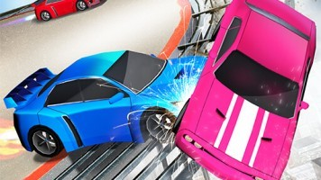
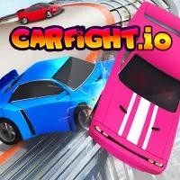
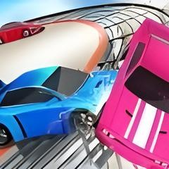

The Hard Truth About Your CarFight.io Runs
You keep plummeting off the roof. I see you out there, driving straight into the center of a 2v1 and wondering why your car is suddenly a pixel at the bottom of the map. I have over 2000 hours in CarFight.io. I have mastered every ramp angle, edge-graze, and momentum trick this game has to offer. You are dying repeatedly because you treat this like a generic driving game. It is not. This is a physics-based sumo wrestling simulator where one bad angle costs you your mass and your life. Stop blaming lag. Stop blaming the map. Your positioning is trash, your angle selection is garbage, and your growth management is completely backward. Read every single mistake below. Fix them, or stay at the bottom of the board forever.

Mistake 1: You Grind the Center
What you’re doing wrong: You sit in the middle of the plateau thinking it is safe. You cruise around the central obstacles waiting for someone to come to you. You refuse to push the edge because you are terrified of falling. You treat the middle of the map like a sanctuary. You just idle there, collecting zero mass, letting the aggressive players control the perimeter. You think you are playing smart, but you are actually starving yourself of the growth required to survive the late game.
Why it’s killing your runs: The middle is a no-man's land. When you stay in the center, you do not grow. You remain small. In CarFight.io, size is everything. Small cars bounce off big cars. When a massive, fully-grown rival finally decides to hunt you down, you have zero mass to absorb their hit. They ram you, and you fly off the edge because you lack the physical weight to resist their momentum. You cannot win a sumo match if you refuse to step on the dohyo.
How to fix it: Prowl the edges. You need to fight near the drop-offs to score easy knockouts. Wait for an opponent to get pushed near the edge, then strike. Angle your car to hit their side, not their front. This pushes them over the boundary. Yes, you risk falling. But you also secure the mass you need to become a threat. Risk the edge to dominate the board. Stop hiding in the middle and start hunting on the perimeter where the real kills happen.
Mistake 2: You Chase the Giants
What you’re doing wrong: You see the biggest car on the server and immediately drive straight toward it. You think taking down the boss gives you bonus points. You ram the massive car head-on, trying to push it off the roof. You ignore the smaller, easier targets because your ego demands you take down the biggest threat. You commit your entire forward momentum into a single, reckless head-on collision with a vehicle that is easily twice your current size.
Why it’s killing your runs: Physics does not care about your fragile ego. The game calculates collision impact based on mass and speed. A giant car has immense mass. When you hit it head-on, you do not push it. You bounce off. The giant barely moves, while you lose all your forward momentum. Now you are completely stationary, right in front of them. They simply reverse and ram you off the edge. You just handed them a free kill and gave up your own position.
How to fix it: Ignore the giants unless you have a reliable teammate. Solo kills on larger cars almost never land. Instead, hunt the medium-sized cars. They have enough mass to give you a solid growth boost, but they are still small enough for you to push. If you must fight a giant, wait for them to be pushed near the edge by someone else. Then, strike their side to finish them off. Patience beats reckless aggression every single time.

Mistake 3: You Ignore Your Growth Penalty
What you’re doing wrong: You get three kills in a row and become massive. You feel invincible. You keep driving straight into the middle of the pack, trying to get a fourth kill. You ignore the fact that your turning radius is now huge. You try to make sharp dodges to avoid incoming fire, but your giant car just plods forward in a straight line. You think your size makes you unstoppable, but it actually makes you a sitting duck.
Why it’s killing your runs: Every time you knock a car off the edge, you gain mass. Mass increases your hitting power, but it severely reduces your turning speed. By the time you are a giant, you cannot pivot quickly. Small, agile cars use this against you. They dart in, hit your side, and dart out. You cannot turn fast enough to face them. They push you toward the edge, and because you are so heavy, you slide right off the boundary.
How to fix it: Manage your size carefully. Once you get big, stop initiating fights in the open. Use your massive size to block the narrow choke points on the map. Force the smaller cars to come to you on your terms. If you get pushed near the edge, do not try to turn around and fight. Just drive straight toward the center to reset your position. Save your massive size for blocking and finishing off cornered enemies.
Mistake 4: You Respawn into the Kill Zone
What you’re doing wrong: You fall off the edge and instantly respawn. You immediately drive back up the ramp to the exact spot where you just died. You want revenge. You think the person who killed you is still there, and you want to get them back. You rush back into the fray without checking your surroundings, driving straight into the same dangerous edge position you just occupied. You are completely predictable and completely reckless with your positioning, making yourself an easy target.
Why it’s killing your runs: The respawn spot is fixed and predictable. Good players know exactly where you will reappear. When you rush back to your death spot, the killer is already waiting for you. They are bigger now because they just got a kill. You are small because you just respawned. They ram you before you even gain any speed, and you fall off again. You are just feeding them free mass. You are trapped in a pathetic death loop of your own making.
How to fix it: Change your respawn angle. When you fall off, take a deep breath. Look at the mini-map or the board layout. Do not go back to the same edge. Drive to the opposite side of the plateau. Find a completely new hunting ground. Let the person who killed you think they cleared the area. Sneak up behind them later when they are distracted fighting someone else. Reset your mind and carefully reset your position.
Mistake 5: You Hit Head-On Instead of Angling
What you’re doing wrong: You see an enemy driving toward you and you just press forward. You aim your front bumper directly at their front bumper. You think a head-on collision is the absolute best way to show dominance. You just mash the accelerate key and hope your car is slightly faster. You ignore the side panels and the rear of their vehicle. You blindly treat every single engagement like a jousting match on a long straight highway.
Why it’s killing your runs: Head-on collisions in CarFight.io result in a stalemate or a mutual bounce. The game's physics engine absorbs the frontal impact. Neither car goes anywhere fast. You waste your boost and your momentum. Worse, while you are locked in a useless frontal push, their teammate drives up and hits your side. You get pushed off the edge because you were way too busy playing tug-of-war with the front bumper to notice the blind flank.
How to fix it: Never hit the front. Always angle your approach. Cut off their path and strike their side panel or rear quarter. A side hit transfers maximum momentum and pushes the enemy laterally. If they are near the edge, a side hit sends them straight over the drop. Always time your strikes when they are turning, exposing their wide flank. Angle your car at a 45-degree intersection to maximize the lateral push and secure the clean kill.

The Bottom Line
CarFight.io is not about who has the fastest reflexes. It is about spatial awareness and momentum management. The players who win are the ones who control the edges, respect their turning radius, and never take a fair fight. If you keep driving into the center and hitting people head-on, you will stay at the bottom of the map. Stop playing like a mindless bumper car and start playing like a calculated predator. Master the angles, manage your mass, and own the perimeter. Now get back in the arena and stop feeding the giants.